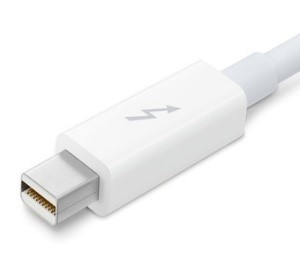
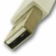
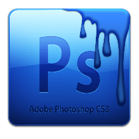

TABLETA DIGITALIZADORA
INTRODUCCION
Tableta digitalizadora o tableta gráfica, es un aparato que permite a los usuarios dibujar o escribir directamente en la pantalla de la computadora. Desarrollada por primera vez en los años 70-80.
PROFUNDIZANDO MAS
Es una placa con una pantalla táctil, sobre la cual el usuario por un lápiz especial puede hacer trazos, para transformarlos en señales digitales, que son enviados a la computadora para que está los reproduzca como imágenes en pantalla.
TABLETA DIGITALIZADORA EN EL MERCADO:
TABLETA CON METODO MECANICO:
En los que el puntero está físicamente conectado a los sensores. Estos sensores son capaces de determinar las distancias en el plano por el giro de unas ruedas solidarias con los brazos móviles. Estos digitalizadores son difíciles e incómodos de usar, por lo que no están muy comercializados.
TABLETA CON METODO ELECTRONICO:
Las mesas electroacústicas emiten ondas de superficie por la mesa, que, equipado el lápiz con un sensor, detecta el paso de estas ondas al posicionarlas. Una onda avanza paralela al eje X y otra al Y, por lo que si medimos el tiempo que tardan desde su generación hasta su detección, se averigua las coordenadas del punto. Una técnica, tanto para digitalizadores de 2D como 3D, es la del lápiz acústico. Este emite una señal acústica que es detectada por dos o tres sensores de tipo micrófono de barra, lo que permite detectar sus coordenadas.
TABLETA DIGITALIZADORA
CARACTERISTICAS TECNICAS:
- Dimensiones: es el tamaño en general de la tableta (largo X ancho X alto).
- Área activa: espacio disponible para el usuario para manipular el lápiz y el ratón.
- Nivel de presión: reconoce la presión en los trazos por medio del lápiz óptico.
- Resolución: es la máxima cantidad de líneas que es capaz de reconocer.
- Velocidad de datos: cantidad de que es capaz de procesar y enviar hacia la computadora.
- Rango de inclinación: es la posición en grados con respecto a la superficie horizontal.
TABLETA DIGITALIZADORA
CARACTERISTICAS FISICAS:
TABLETA DIGITALIZADORA
FUNCIONAMIENTO:
TABLETA DIGITALIZADORA
TIPOS DE CONEXIONES:
Thunderbolt: Transferencia de DisplayPort y PCI Express por un único puerto y doble canal, capacidad de transmisión de 10 Gb/s, utilizado en equipos Apple® Mac.
USB ("Universal Serial Bus"): Conector de 4 terminales con transmisión serial, velocidad de transmisión de hasta 60 KB/s (no actualizado a los actuales cables USB).
TABLETA DIGITALIZADORA
SOFTWARE:
Son las aplicaciones que se utilizan para representar gráficamente los trazos generados desde la tableta digitalizadora, tales como retoques, saturación de color y generar arte digital.
Funciona con cualquier software de edición de imagen medianamente profesional: Photoshop, Painter, Illustrator, Flash…
Adobe® Photoshop.
TheGimp.
TABLETA DIGITALIZADORA
FABRICANTES:
La fabricación y comercialización de tabletas digitalizadoras son muy reducidas. Destacando:
WACOM

GENIUS
Y otras menos conocida y de comercialización geográfica limitada. Destacando:
UGEE
HUION
PERIXX
TRUST
TABLETA DIGITALIZADORA
¿PRECIOS?
Los precios pueden rondar:
- Desde lo más básico y barato 30 €.
- Un precio intermedio entre calidad y precio de entre 150 € y 300€.
- Hasta los de mayor prestacion y más comercializados para profesionales, rondando precios de entre 1.000€ y 2.500€.
TABLETA DIGITALIZADORA
¿DONDE COMPRAR?
La venta de este producto periférico esta tanto física como virtualmente en la web. Destacando:
Para conseguir mayor variedad y calidades, es a traves de páginas web de los propios fabricantes.
Y físicamente, tiendas de electrónicas e informática, como es el ejemplo de Media Markt, Corte Inglés, Worten, etc.